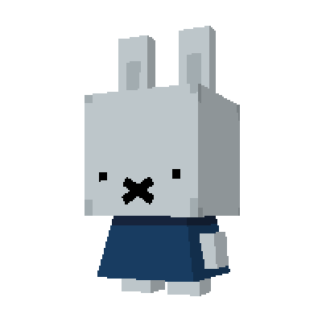
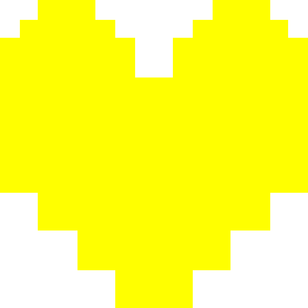

dear franz
i read your message more than once and every time i read it, i find another part of myself in the things you said. not because i think you're wrong, but because i realized how many things you were carrying quietly while i was too busy trying to understand my own feelings,
i'm sorry.
i'm sorry for the days when you were tired and i made your tiredness feel like something i had to be afraid of. i'm sorry for the times when you were hurting and, instead of becoming a place where you could rest, i became someone who was hurting alongside you.
you shouldn't have had to be okay just to make me okay.
i became so afraid of losing you that i forgot that loving someone also means giving them somewhere to breathe. i held onto every change in your tone, every distance, every quiet moment, and sometimes i let my fear speak louder than what you were actually telling me.
and i know my notes and my reposts probably made that worse. you were trying to understand me through pieces of things i left scattered online, trying to figure out whether there was something behind every word. i never wanted you to feel like you had to search for hidden meanings just to understand what was happening inside my head.
if something is wrong with me, i should tell you. you shouldn't have to decode me. and when you said that you questioned whether i only liked you when things were convenient, that stayed with me. because i don't want my love for you to exist only in the easy parts of you. i don't want you to feel like your sadness makes you harder to love. you're still you on the days when you don't have the strength to give anything back. i should've understood that sooner.
you told me you reached out again because
you believed i was worth another chance.
franz, you were worth another chance to me too.
i'm sorry that it took me too long to respond. i hesitated because i didn't know how to express what i was feeling. i didn't know exactly what would happen after that. maybe i was scared too. but somewhere in me, i still believed there was something between us that deserved to be understood
i know you changed for me.
i know you adjusted.
i know you gave things that i
probably didn't acknowledge enough.
i'm sorry i made you wonder
whether i noticed.
i did.
maybe i was simply too caught up in
my own fears to show you that i did.
and about everyone else, i don't want you carrying the weight of people who aren't even part of what we feel between us. i can hear their opinions, but they aren't the ones who get to decide what you mean to me. that's something i was too stupid to realize. i don't want you fighting for your place in my life. i want you to know that you already have one.
i know we won't suddenly become perfect because we're trying again.
there'll still be misunderstandings.
there'll still be days when one of us doesn't know what to say.
but i think the difference this time should be that we don't immediately see those moments as signs that we're falling apart.
we talk,
we listen,
we give each other room,
and we try again.
not because we're afraid of losing each other, but because we're choosing each other while still knowing that we're both imperfect.
you gave me another chance once before, and i don't want to take this one for granted. so if you're willing to walk forward with me again, i'll walk with you.
slowly, honestly, and without pretending that everything is already okay.
we'll make it okay together.
sincerely, aki
-
